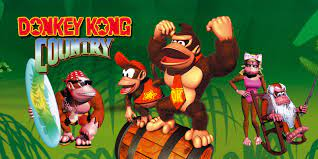

Sobre o Jogo
Em 1994, nos primórdios das consolas de 32 bits, um jogo arrasou a concorrência com os seus gráficos 3D pré-renderizados, animação semelhante a desenhos animados e música atmosférica. Tudo isto na Super NES de 16 bits! A personagem Donkey Kong ganhou nova vida com Donkey Kong Country, um jogo que também deu a conhecer aos jogadores de todo o mundo Diddy Kong, Cranky Kong e os mauzões Kremlings. Junta-te a DK e a Diddy numa aventura para recuperar as suas bananas roubadas. Atravessa mais de 30 níveis desafiantes, apanha boleia às cavalitas de animais amigos e tenta sobreviver às sequências frenéticas nos carrinhos de mina. Donkey Kong Country não é decididamente um jogo para bananas!